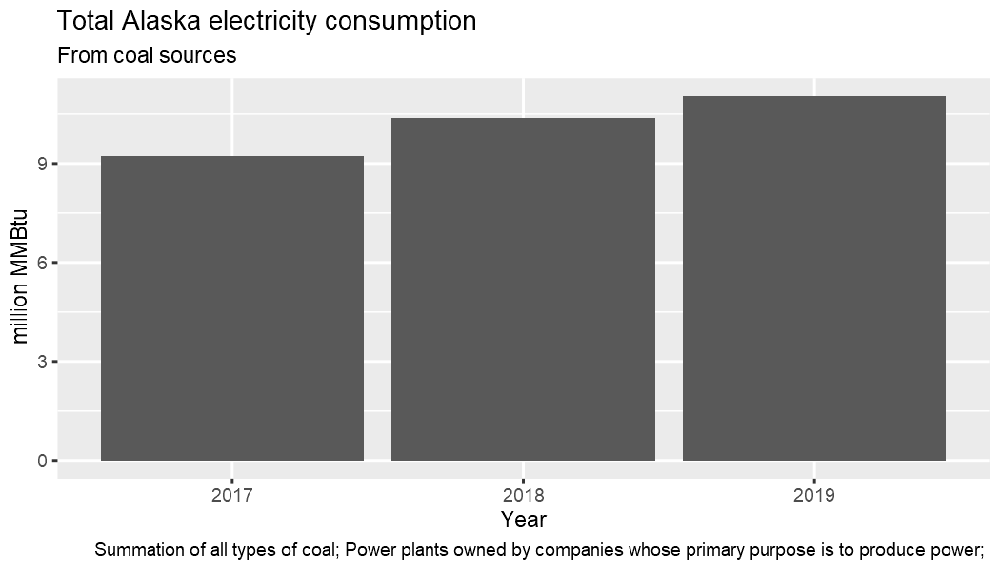

Like category information, time series data is obtained based on its ID. A complete example includes finding the ID for the series if you do not already know it. Chances are you may already know the series IDs you need after using the API explorer on the EIA website. Below, look for total electricity consumption.
library(eia) # eia_set_key("yourkey") # set API key if not already set globally eia_cats() #> $category #> # A tibble: 1 x 3 #> category_id name notes #> <chr> <chr> <chr> #> 1 371 EIA Data Sets "" #> #> $childcategories #> # A tibble: 14 x 2 #> category_id name #> <int> <chr> #> 1 0 Electricity #> 2 40203 State Energy Data System (SEDS) #> 3 714755 Petroleum #> 4 714804 Natural Gas #> 5 711224 Total Energy #> 6 717234 Coal #> 7 829714 Short-Term Energy Outlook #> 8 964164 Annual Energy Outlook #> 9 1292190 Crude Oil Imports #> 10 2123635 U.S. Electric System Operating Data #> 11 2134384 International Energy Data #> 12 2251604 CO2 Emissions #> 13 2631064 International Energy Outlook #> 14 2889994 U.S. Nuclear Outages
Electricity has category ID 0. Take a closer look there.
eia_cats(0) #> $category #> # A tibble: 1 x 4 #> category_id parent_category_id name notes #> <chr> <chr> <chr> <chr> #> 1 0 371 Electricity "" #> #> $childcategories #> # A tibble: 19 x 2 #> category_id name #> <int> <chr> #> 1 1 Net generation #> 2 35 Total consumption #> 3 32 Total consumption (Btu) #> 4 36 Consumption for electricity generation #> 5 33 Consumption for electricity generation (Btu) #> 6 37 Consumption for useful thermal output #> 7 34 Consumption for useful thermal output (Btu) #> 8 1017 Plant level data #> 9 38 Retail sales of electricity #> 10 39 Revenue from retail sales of electricity #> 11 40 Average retail price of electricity #> 12 1718389 Number of customer accounts #> 13 41137 Fossil-fuel stocks for electricity generation #> 14 41138 Receipts of fossil fuels by electricity plants #> 15 41139 Receipts of fossil fuels by electricity plants (Btu) #> 16 41140 Average cost of fossil fuels for electricity generation #> 17 41141 Average cost of fossil fuels for electricity generation (per Btu) #> 18 41142 Quality of fossil fuels in electricity generation : sulfur content #> 19 41143 Quality of fossil fuels in electricity generation : ash content
There are two categories referring to total consumption. Take category ID 32 as an example and step deeper into the category hierarchy.
eia_cats(32) #> $category #> # A tibble: 1 x 4 #> category_id parent_category_id name notes #> <chr> <chr> <chr> <chr> #> 1 32 0 Total consumption (Btu) "" #> #> $childcategories #> # A tibble: 2 x 2 #> category_id name #> <int> <chr> #> 1 373 By fuel type #> 2 372 By sector
At this point you have a choice between total consumption by sector or fuel type. Select by sector.
eia_cats(372) #> $category #> # A tibble: 1 x 4 #> category_id parent_category_id name notes #> <chr> <chr> <chr> <chr> #> 1 372 32 By sector "" #> #> $childcategories #> # A tibble: 11 x 2 #> category_id name #> <int> <chr> #> 1 388 Electric power (total) #> 2 389 Electric utility #> 3 390 Independent power producers (total) #> 4 391 Electric utility non-cogen #> 5 392 Electric utility cogen #> 6 393 All commercial (total) #> 7 394 Commercial non-cogen #> 8 395 Commercial cogen #> 9 396 All industrial (total) #> 10 397 Industrial non-cogen #> 11 398 Industrial cogen
Then total electrical power.
eia_cats(388) #> $category #> # A tibble: 1 x 4 #> category_id parent_category_id name notes #> <chr> <chr> <chr> <chr> #> 1 388 372 Electric power (total) "" #> #> $childcategories #> # A tibble: 4 x 2 #> category_id name #> <int> <chr> #> 1 738 Coal #> 2 739 Petroleum liquids #> 3 740 Petroleum coke #> 4 741 Natural gas
And finally coal.
(x <- eia_cats(738)) #> $category #> # A tibble: 1 x 4 #> category_id parent_category_id name notes #> <chr> <chr> <chr> <chr> #> 1 738 388 Coal "" #> #> $childseries #> # A tibble: 174 x 5 #> series_id name f units updated #> <chr> <chr> <chr> <chr> <chr> #> 1 ELEC.CONS_TOT_BTU.COW-AK-98.A Total consumption (Btu) : coal : Alaska : electric power (total) : annual A million MMBtu 23-MAR-20 06.31.14 PM #> 2 ELEC.CONS_TOT_BTU.COW-AK-98.M Total consumption (Btu) : coal : Alaska : electric power (total) : monthly M million MMBtu 24-APR-20 04.14.48 PM #> 3 ELEC.CONS_TOT_BTU.COW-AK-98.Q Total consumption (Btu) : coal : Alaska : electric power (total) : quarterly Q million MMBtu 23-MAR-20 06.31.14 PM #> 4 ELEC.CONS_TOT_BTU.COW-AL-98.A Total consumption (Btu) : coal : Alabama : electric power (total) : annual A million MMBtu 23-MAR-20 06.31.14 PM #> 5 ELEC.CONS_TOT_BTU.COW-AL-98.M Total consumption (Btu) : coal : Alabama : electric power (total) : monthly M million MMBtu 24-APR-20 04.14.48 PM #> 6 ELEC.CONS_TOT_BTU.COW-AL-98.Q Total consumption (Btu) : coal : Alabama : electric power (total) : quarterly Q million MMBtu 23-MAR-20 06.31.14 PM #> 7 ELEC.CONS_TOT_BTU.COW-AR-98.A Total consumption (Btu) : coal : Arkansas : electric power (total) : annual A million MMBtu 23-MAR-20 06.31.14 PM #> 8 ELEC.CONS_TOT_BTU.COW-AR-98.M Total consumption (Btu) : coal : Arkansas : electric power (total) : monthly M million MMBtu 24-APR-20 04.14.48 PM #> 9 ELEC.CONS_TOT_BTU.COW-AR-98.Q Total consumption (Btu) : coal : Arkansas : electric power (total) : quarterly Q million MMBtu 23-MAR-20 06.31.14 PM #> 10 ELEC.CONS_TOT_BTU.COW-AZ-98.A Total consumption (Btu) : coal : Arizona : electric power (total) : annual A million MMBtu 23-MAR-20 06.31.14 PM #> # ... with 164 more rows
At this point you have reached a terminal node of the category tree. Instead of another table of child category IDs and names in the result, there is a childseries table.
This table contains:
Each row in this table represents a unique time series dataset; in this case for different states and in annual, quarterly and monthly time steps. TO obtain the time series data, make a request using eia_series and provide a series ID.
To see how the different time formats are parsed, take the first three IDs for Alaska. Request only the three most recent results for each series.
id <- x$childseries$series_id[1:3] x1 <- eia_series(id[1], n = 3) x2 <- eia_series(id[2], n = 3) x3 <- eia_series(id[3], n = 3)
The format of each result is the same. Inspect the first one. It is a data frame with one row. All but the final column, data, give metadata about the series. data is a list column (in this case of length one) that can be extracted directly or unnested using tidyr::unnest.
library(dplyr) library(tidyr) library(ggplot2) x1$data[[1]] #> # A tibble: 3 x 3 #> value date year #> <dbl> <date> <int> #> 1 9.74 2019-01-01 2019 #> 2 10.4 2018-01-01 2018 #> 3 9.21 2017-01-01 2017 select(x1, series_id, data) %>% unnest(cols = data) #> # A tibble: 3 x 4 #> series_id value date year #> <chr> <dbl> <date> <int> #> 1 ELEC.CONS_TOT_BTU.COW-AK-98.A 9.74 2019-01-01 2019 #> 2 ELEC.CONS_TOT_BTU.COW-AK-98.A 10.4 2018-01-01 2018 #> 3 ELEC.CONS_TOT_BTU.COW-AK-98.A 9.21 2017-01-01 2017 unnest(x1, cols = data) %>% ggplot(aes(date, value)) + geom_col() + labs(y = x1$units[1], title = "Total electricity consumption from coal sources, Alaska")

Results are similarly structured for the other series, but the columns containing date information differ.
x1$data[[1]] #> # A tibble: 3 x 3 #> value date year #> <dbl> <date> <int> #> 1 9.74 2019-01-01 2019 #> 2 10.4 2018-01-01 2018 #> 3 9.21 2017-01-01 2017 x2$data[[1]] #> # A tibble: 3 x 4 #> value date year month #> <dbl> <date> <int> <int> #> 1 0.878 2020-02-01 2020 2 #> 2 NA 2020-01-01 2020 1 #> 3 0.846 2019-12-01 2019 12 x3$data[[1]] #> # A tibble: 3 x 4 #> value date year qtr #> <dbl> <date> <int> <int> #> 1 2.32 2019-10-01 2019 4 #> 2 2.45 2019-07-01 2019 3 #> 3 NA 2019-04-01 2019 2
The EIA API allows multiple series to be requested in a single API call. You should do this whenever possible to reduce the number of requests you make. To request the same data as above, just provide the id vector. Other arguments like n are not vectorized.
x <- eia_series(id, n = 3) x #> # A tibble: 3 x 13 #> series_id name units f description copyright source iso3166 geography start end updated data #> <chr> <chr> <chr> <chr> <chr> <chr> <chr> <chr> <chr> <chr> <chr> <chr> <list> #> 1 ELEC.CONS_TOT~ Total consumption (~ millio~ A "Summation of all types of coal~ None EIA, U.S. En~ USA-AK USA-AK 2001 2019 2020-03-2~ <tibbl~ #> 2 ELEC.CONS_TOT~ Total consumption (~ millio~ M "Summation of all types of coal~ None EIA, U.S. En~ USA-AK USA-AK 2001~ 2020~ 2020-04-2~ <tibbl~ #> 3 ELEC.CONS_TOT~ Total consumption (~ millio~ Q "Summation of all types of coal~ None EIA, U.S. En~ USA-AK USA-AK 2001~ 2019~ 2020-03-2~ <tibbl~
There are now three rows in the table containing the same data as before. The data list column also contains the same structures as before.
x$data #> [[1]] #> # A tibble: 3 x 3 #> value date year #> <dbl> <date> <int> #> 1 9.74 2019-01-01 2019 #> 2 10.4 2018-01-01 2018 #> 3 9.21 2017-01-01 2017 #> #> [[2]] #> # A tibble: 3 x 4 #> value date year month #> <dbl> <date> <int> <int> #> 1 0.878 2020-02-01 2020 2 #> 2 NA 2020-01-01 2020 1 #> 3 0.846 2019-12-01 2019 12 #> #> [[3]] #> # A tibble: 3 x 4 #> value date year qtr #> <dbl> <date> <int> <int> #> 1 2.32 2019-10-01 2019 4 #> 2 2.45 2019-07-01 2019 3 #> 3 NA 2019-04-01 2019 2
These can be unnested and filled in with NA as needed.
select(x, series_id, data) %>% unnest(cols = data) #> # A tibble: 9 x 6 #> series_id value date year month qtr #> <chr> <dbl> <date> <int> <int> <int> #> 1 ELEC.CONS_TOT_BTU.COW-AK-98.A 9.74 2019-01-01 2019 NA NA #> 2 ELEC.CONS_TOT_BTU.COW-AK-98.A 10.4 2018-01-01 2018 NA NA #> 3 ELEC.CONS_TOT_BTU.COW-AK-98.A 9.21 2017-01-01 2017 NA NA #> 4 ELEC.CONS_TOT_BTU.COW-AK-98.M 0.878 2020-02-01 2020 2 NA #> 5 ELEC.CONS_TOT_BTU.COW-AK-98.M NA 2020-01-01 2020 1 NA #> 6 ELEC.CONS_TOT_BTU.COW-AK-98.M 0.846 2019-12-01 2019 12 NA #> 7 ELEC.CONS_TOT_BTU.COW-AK-98.Q 2.32 2019-10-01 2019 NA 4 #> 8 ELEC.CONS_TOT_BTU.COW-AK-98.Q 2.45 2019-07-01 2019 NA 3 #> 9 ELEC.CONS_TOT_BTU.COW-AK-98.Q NA 2019-04-01 2019 NA 2
Here are some things to keep in mind about eia_series arguments.
start alone.start and end, n is ignored.n, you will receive all relevant data available, subject to any API limits.eia_series(id, n = 10) eia_series(id, end = 2016, n = 5) eia_series(id, start = 2000, end = 2016)
The default is to return tidy data in a tibble data frame. You can set tidy = FALSE to return the list returned by jsonlite::fromJSON without any further processing.
eia_series(id, n = 3, tidy = FALSE) #> $request #> $request$command #> [1] "series" #> #> $request$series_id #> [1] "ELEC.CONS_TOT_BTU.COW-AK-98.A;ELEC.CONS_TOT_BTU.COW-AK-98.M;ELEC.CONS_TOT_BTU.COW-AK-98.Q" #> #> #> $series #> series_id name units f #> 1 ELEC.CONS_TOT_BTU.COW-AK-98.A Total consumption (Btu) : coal : Alaska : electric power (total) : annual million MMBtu A #> 2 ELEC.CONS_TOT_BTU.COW-AK-98.M Total consumption (Btu) : coal : Alaska : electric power (total) : monthly million MMBtu M #> 3 ELEC.CONS_TOT_BTU.COW-AK-98.Q Total consumption (Btu) : coal : Alaska : electric power (total) : quarterly million MMBtu Q #> description copyright #> 1 Summation of all types of coal; Power plants owned by companies whose primary purpose is to produce power; None #> 2 Summation of all types of coal; Power plants owned by companies whose primary purpose is to produce power; None #> 3 Summation of all types of coal; Power plants owned by companies whose primary purpose is to produce power; None #> source iso3166 geography start end updated data #> 1 EIA, U.S. Energy Information Administration USA-AK USA-AK 2001 2019 2020-03-23T18:31:14-0400 2019, 2018, 2017, 9.7429, 10.37727, 9.21412 #> 2 EIA, U.S. Energy Information Administration USA-AK USA-AK 200101 202002 2020-04-24T16:14:48-0400 202002, 202001, 201912, 0.87792, NA, 0.84623 #> 3 EIA, U.S. Energy Information Administration USA-AK USA-AK 2001Q1 2019Q4 2020-03-23T18:31:14-0400 2019Q4, 2019Q3, 2019Q2, 2.31914, 2.45382, NA
You can also return the raw JSON data in a character string if you need to process this directly with other code.
cat(eia_series(id, n = 3, tidy = NA)) #> {"request":{"command":"series","series_id":"ELEC.CONS_TOT_BTU.COW-AK-98.A;ELEC.CONS_TOT_BTU.COW-AK-98.M;ELEC.CONS_TOT_BTU.COW-AK-98.Q"},"series":[{"series_id":"ELEC.CONS_TOT_BTU.COW-AK-98.A","name":"Total consumption (Btu) : coal : Alaska : electric power (total) : annual","units":"million MMBtu","f":"A","description":"Summation of all types of coal; Power plants owned by companies whose primary purpose is to produce power; ","copyright":"None","source":"EIA, U.S. Energy Information Administration","iso3166":"USA-AK","geography":"USA-AK","start":"2001","end":"2019","updated":"2020-03-23T18:31:14-0400","data":[["2019",9.7429],["2018",10.37727],["2017",9.21412]]},{"series_id":"ELEC.CONS_TOT_BTU.COW-AK-98.M","name":"Total consumption (Btu) : coal : Alaska : electric power (total) : monthly","units":"million MMBtu","f":"M","description":"Summation of all types of coal; Power plants owned by companies whose primary purpose is to produce power; ","copyright":"None","source":"EIA, U.S. Energy Information Administration","iso3166":"USA-AK","geography":"USA-AK","start":"200101","end":"202002","updated":"2020-04-24T16:14:48-0400","data":[["202002",0.87792],["202001",null],["201912",0.84623]]},{"series_id":"ELEC.CONS_TOT_BTU.COW-AK-98.Q","name":"Total consumption (Btu) : coal : Alaska : electric power (total) : quarterly","units":"million MMBtu","f":"Q","description":"Summation of all types of coal; Power plants owned by companies whose primary purpose is to produce power; ","copyright":"None","source":"EIA, U.S. Energy Information Administration","iso3166":"USA-AK","geography":"USA-AK","start":"2001Q1","end":"2019Q4","updated":"2020-03-23T18:31:14-0400","data":[["2019Q4",2.31914],["2019Q3",2.45382],["2019Q2",null]]}]}
This allows you to use the returned results with existing code you may have that requires data in one of these less processed structures.
There are some functions available that make small API calls and return only metadata associated with a time series dataset.
eia_series_metadata(id) #> # A tibble: 3 x 12 #> series_id name units f description copyright source iso3166 geography start end updated #> <chr> <chr> <chr> <chr> <chr> <chr> <chr> <chr> <chr> <chr> <chr> <chr> #> 1 ELEC.CONS_TOT~ Total consumption (Btu~ millio~ A "Summation of all types of coal; P~ None EIA, U.S. Ene~ USA-AK USA-AK 2001 2019 2020-03-23~ #> 2 ELEC.CONS_TOT~ Total consumption (Btu~ millio~ M "Summation of all types of coal; P~ None EIA, U.S. Ene~ USA-AK USA-AK 2001~ 2020~ 2020-04-24~ #> 3 ELEC.CONS_TOT~ Total consumption (Btu~ millio~ Q "Summation of all types of coal; P~ None EIA, U.S. Ene~ USA-AK USA-AK 2001~ 2019~ 2020-03-23~ eia_series_updates(id) #> # A tibble: 3 x 2 #> series_id updated #> <chr> <chr> #> 1 ELEC.CONS_TOT_BTU.COW-AK-98.A 2020-03-23T18:31:14-0400 #> 2 ELEC.CONS_TOT_BTU.COW-AK-98.M 2020-04-24T16:14:48-0400 #> 3 ELEC.CONS_TOT_BTU.COW-AK-98.Q 2020-03-23T18:31:14-0400 eia_series_dates(id) #> # A tibble: 325 x 4 #> series_id date eiadate date_format #> * <chr> <date> <chr> <chr> #> 1 ELEC.CONS_TOT_BTU.COW-AK-98.A 2001-01-01 2001 A #> 2 ELEC.CONS_TOT_BTU.COW-AK-98.A 2002-01-01 2002 A #> 3 ELEC.CONS_TOT_BTU.COW-AK-98.A 2003-01-01 2003 A #> 4 ELEC.CONS_TOT_BTU.COW-AK-98.A 2004-01-01 2004 A #> 5 ELEC.CONS_TOT_BTU.COW-AK-98.A 2005-01-01 2005 A #> 6 ELEC.CONS_TOT_BTU.COW-AK-98.A 2006-01-01 2006 A #> 7 ELEC.CONS_TOT_BTU.COW-AK-98.A 2007-01-01 2007 A #> 8 ELEC.CONS_TOT_BTU.COW-AK-98.A 2008-01-01 2008 A #> 9 ELEC.CONS_TOT_BTU.COW-AK-98.A 2009-01-01 2009 A #> 10 ELEC.CONS_TOT_BTU.COW-AK-98.A 2010-01-01 2010 A #> # ... with 315 more rows eia_series_range(id) #> # A tibble: 3 x 7 #> series_id start_date end_date start end date_format n #> * <chr> <date> <date> <chr> <chr> <chr> <int> #> 1 ELEC.CONS_TOT_BTU.COW-AK-98.A 2001-01-01 2019-01-01 2001 2019 A 19 #> 2 ELEC.CONS_TOT_BTU.COW-AK-98.M 2001-01-01 2020-02-01 200101 202002 M 230 #> 3 ELEC.CONS_TOT_BTU.COW-AK-98.Q 2001-01-01 2019-10-01 2001Q1 2019Q4 Q 76 eia_series_cats(id) #> # A tibble: 6 x 3 #> series_id category_id name #> * <chr> <int> <chr> #> 1 ELEC.CONS_TOT_BTU.COW-AK-98.A 474 Electric power (total) #> 2 ELEC.CONS_TOT_BTU.COW-AK-98.A 738 Coal #> 3 ELEC.CONS_TOT_BTU.COW-AK-98.M 474 Electric power (total) #> 4 ELEC.CONS_TOT_BTU.COW-AK-98.M 738 Coal #> 5 ELEC.CONS_TOT_BTU.COW-AK-98.Q 474 Electric power (total) #> 6 ELEC.CONS_TOT_BTU.COW-AK-98.Q 738 Coal
Like eia_seires, these functions accept an id vector. They always return a tibble data frame. eia_series_cats uses the series categories endpoint and accepts the tidy argument so that output from the endpoint may be a JSON string, list or the tibble data frame.
EIA date strings used to specify start and end dates for time series requests are character strings that are not in any standard date formats. There are several functions that assist with moving between these strings and standard dates.
You can convert EIA date strings to dates.
eiadate_to_date(c("201803", "201804")) #> [1] "2018-03-01" "2018-04-01"
or dates to EIA format; here are examples using annual, quarterly and monthly time formats.
date_to_eiadate("2018-05-14", "A") #> [1] "2018" date_to_eiadate("2018-05-14", "Q") #> [1] "2018Q2" date_to_eiadate("2018-05-14", "M") #> [1] "201805"
It is also easy to create a date sequence from two EIA time stamps. The format is parsed from the first value (they are intended to always be consistent).
(x <- eiadate_to_date_seq("2018Q1", "2018Q4")) #> [1] "2018-01-01" "2018-04-01" "2018-07-01" "2018-10-01" date_to_eiadate(x) #> [1] "2018" "2018" "2018" "2018"
It is good practice to minimize the number of API calls you make wherever possible. One way to do this is to not request data that has not changed since you last requested it. You can make an API call to the EIA updates endpoint to check update times on data series. If any series have not been updated since you last obtained the data, then you know you do not need to request the data again.
The eia_series_updates function shown above is handy for checking the most recent data update times of a specific set of series IDs. However, it must make one or more API calls to do so. For general checks on a potentially large number of series without having to query them all, you should use eia_updates. This function takes a category ID and can return the last update times for all series under that category.
If a category level has no series directly associated with it, an empty data frame is returned.
eia_updates(389) #> # A tibble: 0 x 2 #> # ... with 2 variables: series_id <chr>, updated <chr>
If a category has series available, paginated results are returned in a data frame. You can use n and start (together, unlike for general data requests with eia_series) to indicate how many rows to return and where to start. This helps you to cycle through pages of results. By default, n = 50 and start = 1. The EIA API updates endpoint allows a maximum of n = 10000.
eia_updates(742, n = 5) #> # A tibble: 5 x 2 #> series_id updated #> * <chr> <chr> #> 1 ELEC.CONS_TOT_BTU.COW-AK-1.M 2020-04-24T16:14:48-0400 #> 2 ELEC.CONS_TOT_BTU.COW-AL-1.M 2020-04-24T16:14:48-0400 #> 3 ELEC.CONS_TOT_BTU.COW-AR-1.M 2020-04-24T16:14:48-0400 #> 4 ELEC.CONS_TOT_BTU.COW-AZ-1.M 2020-04-24T16:14:48-0400 #> 5 ELEC.CONS_TOT_BTU.COW-CO-1.M 2020-04-24T16:14:48-0400
Set deep = TRUE to obtain series associated with child categories. Category 389 above did not have series, but some of the child categories do.
eia_updates(389, n = 5, deep = TRUE) #> # A tibble: 5 x 2 #> series_id updated #> * <chr> <chr> #> 1 ELEC.CONS_TOT_BTU.COW-AK-1.M 2020-04-24T16:14:48-0400 #> 2 ELEC.CONS_TOT_BTU.COW-AL-1.M 2020-04-24T16:14:48-0400 #> 3 ELEC.CONS_TOT_BTU.COW-AR-1.M 2020-04-24T16:14:48-0400 #> 4 ELEC.CONS_TOT_BTU.COW-AZ-1.M 2020-04-24T16:14:48-0400 #> 5 ELEC.CONS_TOT_BTU.COW-CO-1.M 2020-04-24T16:14:48-0400
The above example works to show this while using n = 5 because there were no results for the top parent category. if there had been, it would likely be necessary to request more results in order to see that child series were included.